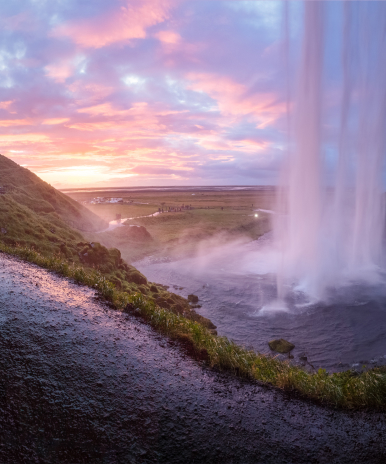
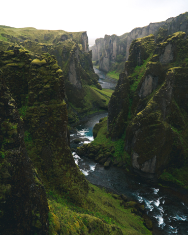

What Dreams Are Made Of
Trips for Explorers
We find once-in-a-lifetime locations and reserve them for travelers full of adventure. Calling all explorers and extremists to the trip of their dreams in the most exotic locations all around the globe.
Off The Beaten Path
Places without People
We specialize in finding places no one else knows about. Here are a few of our favorite spots for true adventurers.

Ocean Wonders

WaterFall

Ocean

Mountain